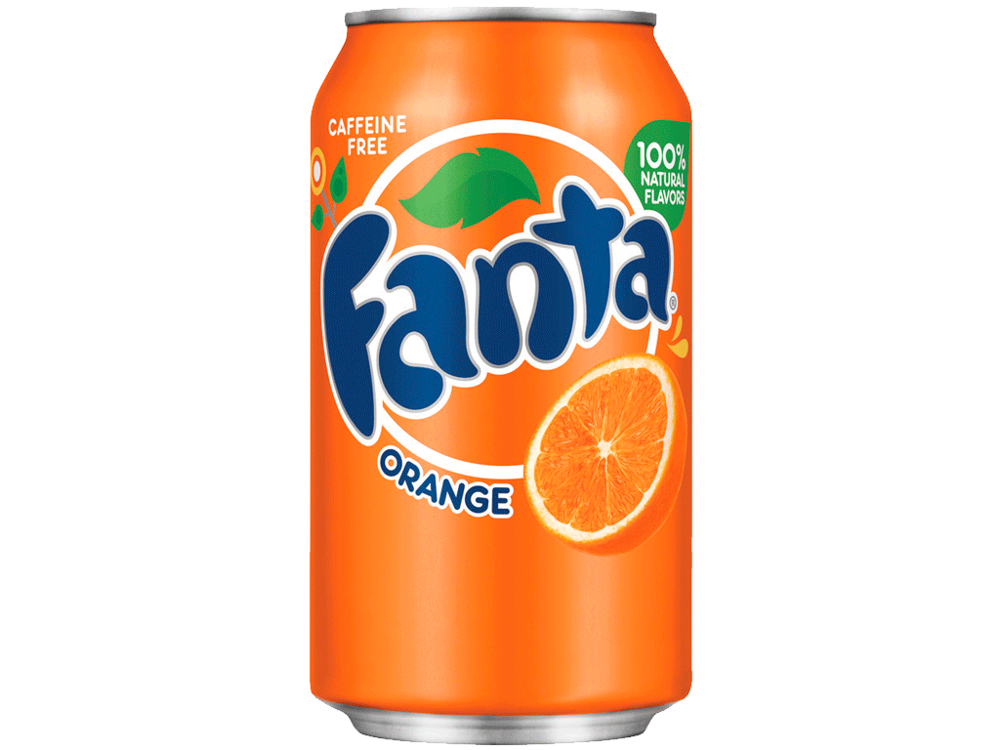

PEPSI
The Taste That Unites
Fanta is a popular carbonated soft drink brand owned by The Coca-Cola Company. It is best known for its fruity flavors and vibrant colors, making it a favorite among people of all ages. Originally created in Germany in 1940 due to a shortage of Coca-Cola ingredients during World War II, Fanta has since become one of the most recognized soda brands in the world. Over the years, it has expanded into various flavors, with Fanta Orange being the most iconic and widely available. Other popular flavors include grape, pineapple, strawberry, lemon, and many region-specific varieties that cater to different taste preferences.

PEPSI
FANTA
SPRITE